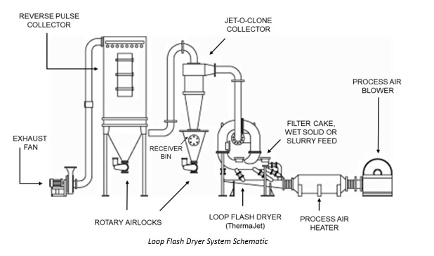
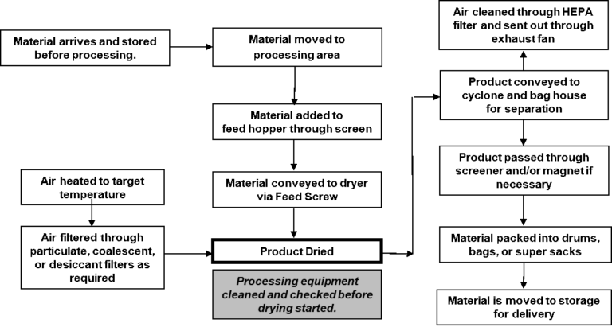

Loop Dryer Process Layout
Fluid Energy loop flash dryers are used to dry and calcine granular materials. The overall drying system requires additional equipment beyond the dryer unit. In the picture at the right, is a dryer system using a Fluid Energy ThermaJet. To transport the granular material into the dryer and remove the moisture, additional feeding, separation, and storage equipment is necessary in addition to the dryer unit.
In this article we will review the main components of this type of drying system. In considering whether to purchase a loop dryer system, it is a good to know the basic process requirements. Below is a schematic of a ThermaJet process showing the main pieces of equipment.

Main Supporting Equipment for Drying System:
Air Blower: Used to blow air into the ThermaJet dryer for drying.
Air Heater: Used to heat air between 200F and 1300F before entering loop dryer to effectively dry the material.
Material Feeder: Hopper with screw feeder meters material into ThermaJet for drying. Feeder has controls to meter material at a consistent, fixed rate. The material is fed through a venturi funnel into the dryer.
Receiver Bin/Rotary Airlock Valve: A cyclone separator (e.g. Jet-O-Clone Collector) is used to remove the majority of product from the gas stream exiting the dryer. This is the main product stream of fine powder from the mill. Product is collected in a Receiver Bin and fed via gravity from Receiver Bin through rotary valve into packaging container.
Reverse Pulse Collector/Rotary Airlock. Dust collector contains cartridges/filters to filter out remaining finer powder in gas stream. This is the secondary stream of product from the dryer. When pulsing cartridges to clean them, finer material falls to bottom of collector and is gravity fed through rotary valve to packaging. Other equipment has been used instead of or in addition to a pulse collector: Wet scrubbers, electrostatic precipitators, HEPA filters. Some of the factors which influence the selection of the product collection equipment may be the number of products handled in a system, frequency of product changes, desire to segregate fine material from finished product, explosive nature of the product, toxic nature of the product
Exhaust fan: Ensures proper air flow from the pulse collector.
Work Process
Below is a work process diagram outlining the basic steps in a drying process, and how the equipment is used to produce a dried product. There are two main process flows into the loop dryer, granular solids to be dried and heated air. The blended air and solid streams are then separated into the exhaust air and dried powder product. The steps shown below may have additional sub steps depending on the applications and specifications of the final product.

Quality Control & Analytical Equipment
During the grinding process sampling of the material is necessary to ensure the material is dried to the target specification. Processing personnel are supported by a quality control laboratory to verify material is in spec. The key measurement in the process is the final moisture level of the product. In addition, particle size, pH, and color of the final product may be measured:
- Moisture: Moisture level of initial and final powder is measured in oven or dedicated moisture analyzer.
- Particle Size and Size Distribution:
- Laser diffraction measurement of particle size and size distribution
- Grind gage to test for oversize particles within the powder
- Sieve screens for coarse measurement of particle size distribution
- pH: Slurried powder is checked for changes in pH.
- Color: Spectrophotometer used to measure shifts in color versus unmilled standard.
Additional measurements may be made in addition to those listed above depending on the requirements of the final material.
There are numerous variations on the basic system outlined here. If you are looking to dry ground powders and have questions on what equipment is required for your application, please contact Fluid Energy Processing and Equipment at this link with any questions.
References:
1. R.H. Perry and D.W. Green, Chemical Engineering Handbook, 8th Ed., 2007, p. 21-61 to 21-62.